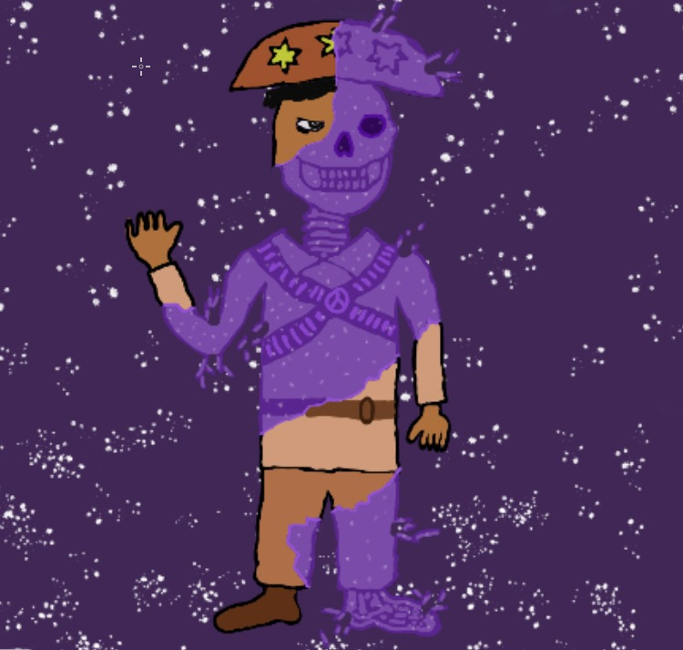

8 DE NOVEMBRO DE 2024
Acadêmico
• Fazendo 5 matérias na faculdade (que terror °Д° ).
• Fazendo parte de uma matéria Honors (Cálculo II Honors) e me sentindo muito orgulhoso com isso!
• Fazendo parte do CAAD (Centro Acadêmico Alexandre Direne).
• Planejando um projeto de extensão (PET, C3SL, IC) e melhorando minhas habilidades até lá!
• Mexendo muito em meu site e aprendendo sobre a small-web.
Pessoal
• Tentando ter mais disciplina para ir na academia.
• Melhorando minha autoestima todos os dias.
• Tentando passar mais tempo com aqueles que importam pra mim.
• Tentando expressar melhor meus sentimentos para com os outros.
• Tentando me cobrar e me comparar menos com os outros.
• Investindo naquilo (confio em você, Thigas do Futuro!).
Hobbies
• Jogando muito Elden Ring (acho que estou viciado ☼.☼).
• Jogando muito Fortnite (quase terminando o passe Remix!).
• Jogando D&D (Irumai Meia-Vida é o melhor personagem de todos).
• Lendo A Flecha de Fogo e A Trilogia da Tormenta (Leonel escreve mt bem).
